Reading: Chapter 19, 20, 21, Library of simulations of galaxies
Recap
- Top Hat Q1, Q2: nucleosynthesis, metallicity
The geography of Tucson, and local regulation on light pollution, make it great for stargazing (see here for specific places recommended by "Southern Arizona Dark Sky"). Throughout most of the 10s of thousands of years of human history, most people had access to an even better view, and many saw what the Greeks called the "Milky way", as a brighter, whiter patch of the sky.

The Clouds

In the southern hemisphere, there are also two bright "patches", now unfortunately known as the Large and Small Magellanic Cloud (LMC & SMC).
Magellan was not even the first to report them in the limited context of western Europe, and proposals to change the name to retain the acronym have been discussed (e.g., Magellan → Milky, APS).
Note however that the nature of these extended sources was unclear, and the clouds are not the only extended sources (there are others in both hemispheres), complicating their interpretation. The nature of nebular extended sources, and thus their distance and intrinsic luminosity remained elusive until the early 20th century.
What is a galaxy?
We now know that these are "galaxies". The word galaxy comes straight from the greek "milky"+"way". These 3 galaxies are part of the larger Local group and Virgo cluster.
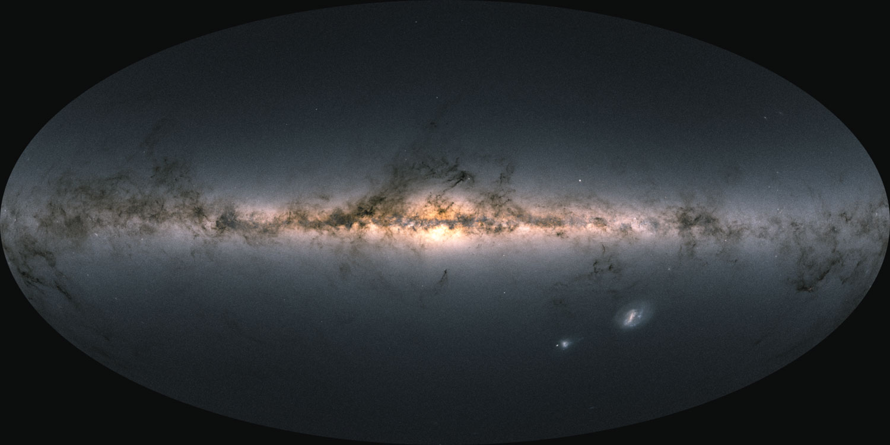
In the modern definition, a galaxy is a gravitationally bound system of stars (including their remnants and planets), gas, dust, and dark matter.
The "Milky way" is the projection on the sky of its disk (see also below)!


In common astrophysical jargon we use Milkyway (MW) to refer to the entire Galaxy hosting the Solar system, and not just the visible arm appearing like a white-ish glow in a dark night: the name has drifted from referring to the purely empirical phenomenology observed by naked eye to a theory-bearing statement that embeds the idea of "isolated island Universes" as galaxies. But this understanding that is far from trivial! Figuring out how stars are distributed and what is the place of the Solar system in this took a long path.
The textbook analogy is that it is like trying to understand the shape of the house sitting within the kitchen. You can see some outside from a window, but there are thick walls everywhere blocking your view!
Multi-λ view of the Milky way
Even today, despite a multiwavelength view of the Galaxy, we are still learning about its structure and evolution that shaped it!

Nevertheless, comparative studies are crucial to understand the evolution of galaxies and how it shapes their structures. JWST and soon Roman have IR detectors which allow astronomers to detect galaxies farther away (meaning earlier in the Universe's evolution!) to directly map the phases of galactic evolution!
N.B.: In astrophysics we don't control the experimental setup, so comparative studies that allow one to compare different realizations of the same physical processes have a great importance from asteroid to galaxy scale!
Timeline
Let's discuss a brief and partial timeline of the shaping of the idea of "island Universes" or galaxies:
In the Aristotelian tradition, the question of the distribution of stars in the sky did not really exist: they occupied the outermost celestial sphere, and the apparent clumping was of no concern. Their lack of detectable annual parallax (by naked eye) was considered evidence for the lack of orbital motion of the Earth in support of geocentrism.

Figure 6: Medieval illustration of an Aristotelian geocentric Universe In the 1600s, Galileo's pointing of telescopes to the night sky showed that the Milky way, and extended bright clumps were actually made of many stars. He did not solve the parallax issue existing since ancient Greece but made it less of an issue.
Figure 7: Galileo sketches of the Orion region (left) and Pleiadis (right): his telescope allowed him to distinguish an unprecedented number of stars. Siblings William and Carolina Hershel tried to map the shape of the Milky way from star counts and determined it was a flattened disk, so not a uniform distribution.

Figure 8: Drawing by Hershel in 1785 Recall Messier catalogs: extended "nebular sources" could be mistaken for comets within the Solar system. If was unclear whether these constituted local sources (for some meaning of local), or far away unresolved sources. N.B.: Galileo had already shown once that extended nebulae such as Orion where actually many many stars unresolved without a telescope, same "flavor" of question! This catalog contains 110 objects that he knew were not comets that Messier wanted to avoid. But a part from not being comets, they are a mixed bag astrophysically (from galactic planetary nebulae, to clusters, to external galaxies). The Messier catalog remains a classic target for amateur astronomers in the Northern hemisphere. Here you can see images of all of them.
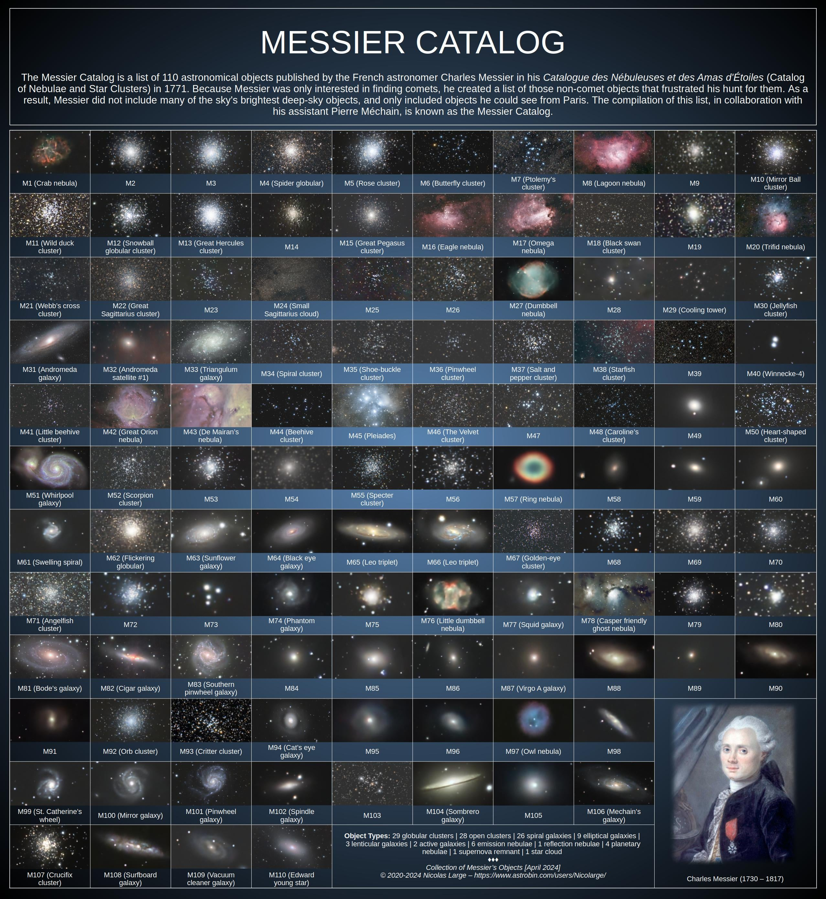
Figure 9: 110 objects in the Messier catalog of not comets. - The study of the distribution of these nebular sources became a way to probe the structure of the "Universe" (at a time with no distinction between Universe/Galaxy). Kapteyn, Pannekoek, and other dutch astronomers started a program to measure their distances and started finding puzzling large numbers – expanding once again the Universe since Galileo had shown that stars were more numerous than then eye could see.
In a replay of the geocentrism vs. heliocentrism debate, the position of the Solar system in the Galaxy was unclear, and either assumptions were considered. Harlow Shapley in the 1920 showed that a particular set of nebular sources (the globular clusters) were distributed not centered around the Sun, but a different center did exist.

Figure 10: Reproduction by F. Timmes of H. Shapley spatial distribution of globular clusters. Curtis & Shapley debate: the American National Academy of Science held on 1920 a "Great debate" between two Californian astronomers on the question of the shape and size of the Universe.
Shapley's position was that the Universe was much bigger than previously thought (1000s of light years!) and the solar system was not in its center. He interpreted all nebulae (such as M31) as objects part of the same "Universe" (in today's language he meant galaxy), much like globular clusters were.
Curtis position was that the Universe was made of these large "island Universes" separated by large swaths of space without stars, and the Solar system was in one of these "island Universes" (galaxies) together with some nebulae (like the GCs), but some other nebulae are other farther "island Universes".

Figure 11: M31 (Andromeda galaxy, part of the Messier catalog and visible by naked eye in good conditions) was a key object in the debate on the scale of the Universe
Hubble, using the stellar physics insight by Henrietta Swan Leavitt measured the distance to nebular objects, revealing that M31 was ≥750 kpc ≫ 10 kpc radius of the stellar disk of the MW.
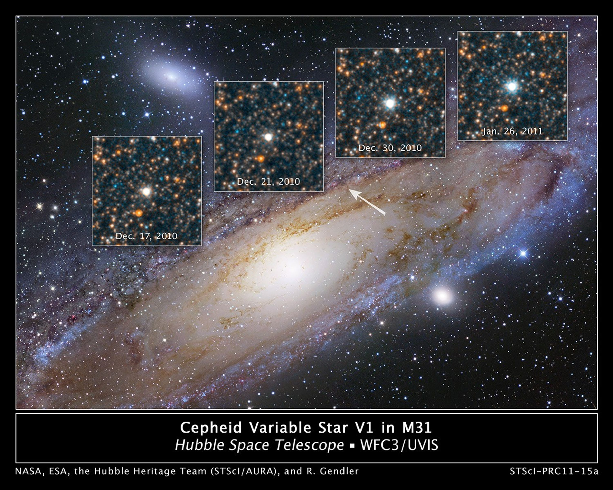
Figure 12: Cepheids are pulsating stars: measuring the time for pulsations is easy, and Henrietta Leavitt had discovered that the period of pulsation gives the luminosity. From this, Hubble, measuring the brightness of Cepheids and their period could calculate the distance to M31.
The Cepheids period-luminosity relation as distance measurement
Henrietta Swan Leavitt was one of the Harvard computers in the early 20th century, and was studying Cepheid stars, which change periodically in brightness. Using nearby stars, for which she could get a parallax and thus a distance, she found a proportionality between the period and visual-bang brightness.

Both Shapley and Hubble used observations of the same kind of stars in GCs and M31 respectively, and using their measured periods determined their intrinsic luminosity and thus distances. Hubble's distance to M31 was so great that one had to conclude it was a separate "island Universe" or galaxy.
N.B.: The understanding of stars underpins the entire galaxy evolution field, and even cosmology: Cepheids are still the first rung in the cosmological "distance ladder".
Size of the Milky Way and its neighborhood
- Top Hat Q3: appearance of young stars
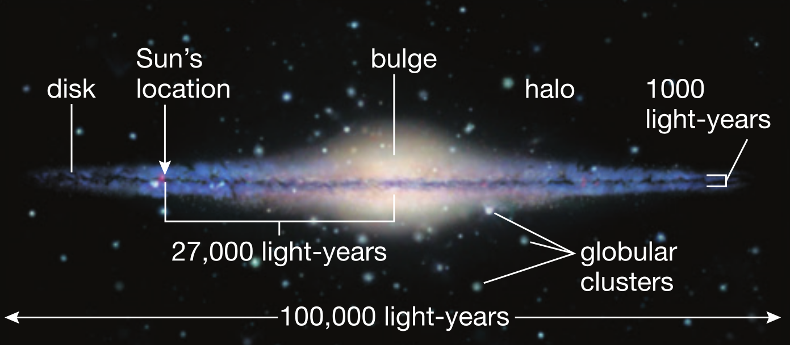
The MW has a diameter of about \(R=10\mathrm{kpc}\), with most of the young stars in a thin disk of 300pc of thickness, and a halo of older stars roughly spherical.
The Sun is part of the Galactic disk, with a galactocentric radius of about 8kpc: we are indeed in the outskirts as revealed by Shapley.
N.B.: Stars and solar systems rotate around the Galaxy, but also can feel (e.g., during fly-bys) their own gravity: the total angular momentum is distributed through gravitational torques. Stars behave like the particles of a gas that can "bump into each other", but instead of "bumping" (electromagnetic interactions), they communicate through gravity. This is why (some) galaxies have disks!
The nearest galaxies are the LMC and SMC, at about \(D=50\,\mathrm{kpc}\) from the Galaxy.
N.B.: The size of a Galaxy and its distance to the nearest galaxies are typically comparable (\(R/D\sim1\), only \(\sim 0.2\) for the MW-LMC/SMC), therefore the tides exerted by a galaxy on the next are significant, and medium-size galaxies are not in dynamical equilibrium!
N.B.: Tides are due to the difference in gravity between points of an extended body (like a Galaxy)
That is however only the visible part of the galaxy: effectively, where the stars are. By trying to measure the total mass of the galaxy, we found that this is only a small fraction (∼20%) of a galaxy!
Measuring the mass of a galaxy: dark matter
Measuring distances is hard, that's why Leavitt's relation between luminosity and period of the cepheids was important. Similarly, measuring masses in space is hard: for stars we could find binaries, and use Kepler's laws to derive masses.
Binary galaxies exist too (in a sense the MW-LMC-SMC is a triple system of Galaxies), but their orbits are:
- not stable and Keplerian, but the out-of-equilibrium product of the constant tug and pull of flybys by other galaxies
- take hundreds of millions of years (vs. sub-hour to centuries for stars)
This means we cannot use the same astronomical trick! However, we can still use the physics described by the Kepler laws (and explained by the Universal law of gravitation by Newton): not among galaxies, but by measuring the orbit of stars around the galaxy.
N.B.: The mass of a star is so small compared to the mass of a galaxy, that we can use stars as "test particle" that probe the local gravitational field of the galaxy without changing it significantly.
The Sun's orbit takes about 250 million years (meaning we barely have moved since the genus homo appeared on Earth ∼ 3 million years ago).
We can also play this game in other galaxies, and Vera Rubin discovered "excess mass" that is not made of shiny stuff in any of the electromagnetic wavelengths we look.
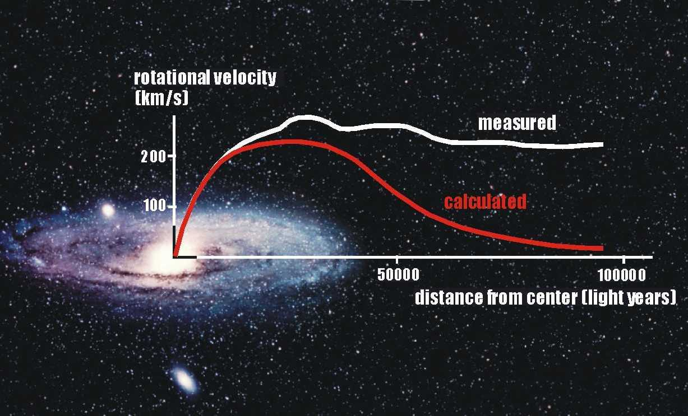
Galaxy rotation curves are empirical evidence that the gravitational mass of a galaxy is not distributed like the light sources. The easiest hypothesis is that there is "dark matter" (DM): the only thing we know is it does not interact significantly in electromagnetic wavelengths.
The idea of dark matter was originally proposed by Zwicky in the 1930s, but he was a scientist famous for shelling out many half-baked ideas: Vera Rubin's work provided the first evidence for it.
Since then, many other concordant and independent line of evidence have been found for DM at various scales:
Cosmological: we can measure the equivalent of sound waves propagating across the distribution of galaxies (as in galaxies are the molecules of the air carrying the sound) requires DM
Figure 16: Animated gif of baryonic acoustic oscillations, sound waves generated early in the Universe which are frozen in the "gas of galaxies" Strong lensing: In general relativity (GR), mass can bend space-time causing gravity (this, as any new scientific theory, englobes and reduces to Newtonian gravity for scales large compared to \(GM/c^{2}\)). Since in this framework gravity is not a force acting on a mass but rather the effect of the shape of space-time, light is also affected by gravity. A mass sitting along the line of sight can act as a magnifying glass:l ight from background galaxies can be "lensed" and arrive stretched, which provides another means to measure mass, and we find DM around galaxies.
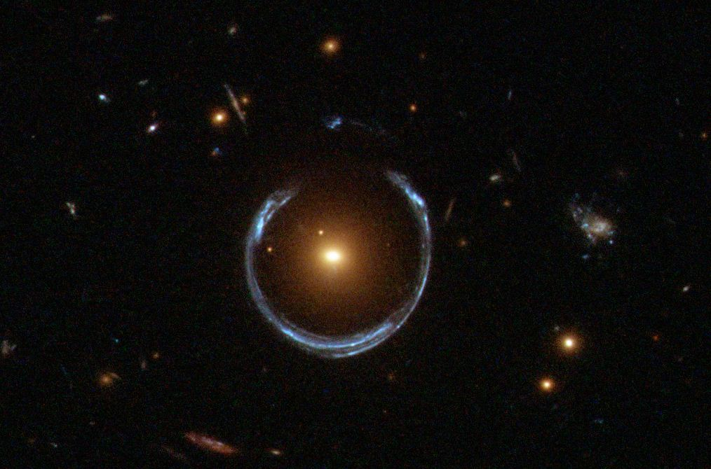
Figure 17: "Einstein ring" produced by gravitational lensing by the yellow galaxy of a background blue galaxy. Bullet cluster: shows two merging galaxy clusters with most of the mass (blue IR) ahead of the stars and gas (pink). The mass location is confirmed by lensing of background galaxies: this shows how most of the mass is not slowed down by the EM interactions in the collision and goes straight past each other because it is DM
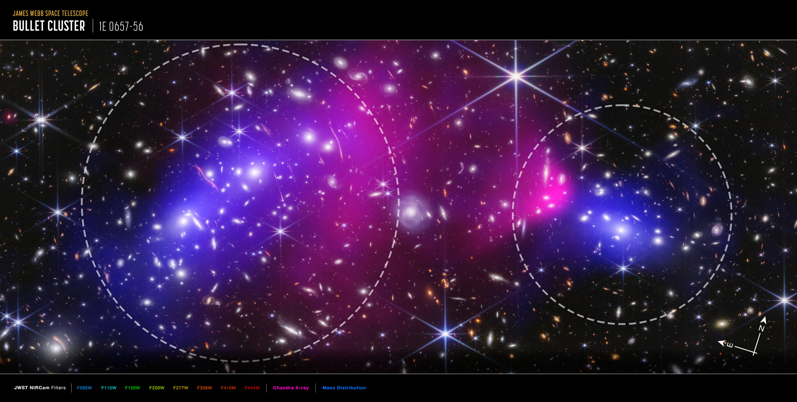
Figure 18: Composite image of the bullet cluster. The pink is X-rays tracing the hot gas (heated by the collision between these clusters of galaxies), the blue is IR from JWST. The gravitational lensing suggests that most of the mass is in the blue area, not where most of the gas is (pink): this is because DM is unaffected by the collisional energy injection and overshoots the gas which instead slams into the gas of the other galaxy, slows down and heats up.
All these point to about ∼ 5/6 of the mass of the Universe being dark matter and ∼1/6 of the mass is baryonic meaning, interacts with electromagnetic forces and thus can shine. The evidence for DM is strong and based on multiple coherent astrophysical measurements at various scales.
Despite this, we don't have any evidence at particle level of what DM is: particle accelerators like Fermilab in Illinois and CERN in Switzerland continue experimental searches, and theorist still come up with DM particle models or theory of gravity that try to do away with DM (which usually struggle with the diversity of evidence for DM).
The mass of the MW is about \(10^{12} M_{☉}\) in stars and which is only 0.1-1% of the total mass, of \(10^{15}M_{☉}\).
Galactic structure
Let's briefly consider the observable structure of the MW galaxy: as we will discuss below, the features are a product of the stellar and gas kinematic within the galaxy observed at a specific snapshot in time (since the timescales involved are often 100 of millions of years, the entire history of humanity is still just a snapshot in time from the galactic point of view).
Halo
DM component
The DM halo's structure is still a topic of research (e.g., using the motions of stars as test particles in the DM gravitational potential – much like rolling a ball on a surface to find the hills and valleys).
All we know about DM is that it is by definition something that behaves according to the laws of Newtonian gravity (regulating the motion of stars in Galaxies), but not interact electromagnetically.
This means DM particles cannot collide and exchange energy (remember: "touching" is EM repulsions between your electrons and the electrons of what you touch!), or angular momentum.
While a collapsing cloud of ordinary baryonic matter, if it has any minimal rotation, tends to form a disk, DM should continue to zoom around in a spherical cloud of orbits randomly oriented around the common center of mass that cross each other with no collisions: a uniform distribution of matter is also what is required to fix rotational curves.
For the MW this halo is probably extending 100 of kpc (\(\gtrsim 10\times\) the radius of the stellar component of the Galaxy).
Stellar Halo
This is a roughly spherical distribution of old and faint stars with radius about 10 kpc.
Halo stars tend to be older and less rich in metals (remember that stars enrich the gas: the older stars are less "rich"!), and they spend time at apocenters of galactic orbits that have been energized (or dynamically heated) as they went around and around the galactice center for billions of years.
Some globular clusters also orbit the Galactic center spending most of their time in the Halo.
Galactic disk
α-rich/thin disk
We have already encountered this as the most prominent feature in optical-band observations: most young stars are forming in the Galactic thin disk (100pc thick), where also there is a lot of interstellar dust blocking the view and causing darker patches. These stars are also α-rich, that is they have many elements with \(A=4n\) and $n=1,2,3,…$, that is elements that are bound states of α particles, those produced preferentially by the massive stars.
α-poor/thick disk
Around the thin disk of young stars, there is a thicker disk, maybe 3-500pc thick of stars slightly older (dynamically heated onto more inclined galactocentric orbits) and less enriched in elements like oxygen, the thick α-poor disk.
N.B.: Original definitions of thin and thick disk were only based on the position of the stars (vertical height above the midplane of the galaxy), but that is ill-defined: over millions of years (short time compared to the galaxy lifetime), that height changes. Today we use a mixture of kinematic and chemical signatures to assign a star to the thin or thick disk.
Spiral arms
The rotation of the galaxy is such that hydrodynamical instabilities can develop. Much like a traffic jam is a pile up of cars, the spiral arms of a Galaxy are pile ups in the orbit of stars in the disk!
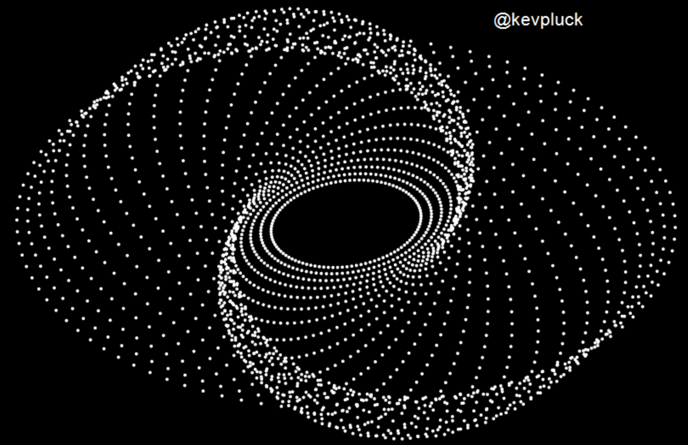
In these stellar traffic jams the gas of the galaxy is compressed, and there are more "occasions" for perturbations to trigger star formation: most young stars are in the spiral arms of the thin disk!
Bulge
The majority of stars are towards the Galactic center, the Bulge of the galaxy. There the metallicity (amount of mass that is not H and He) is higher, suggesting also a larger churn of stellar generations: this suggests an inside out formation of galaxies, with the inner portion containing the stars that have materials recycled the most times.
Much like the halo is composed of stars dynamically heated onto very inclined and eccentric orbits, the bulge is also thicker than the disk because of this reason.
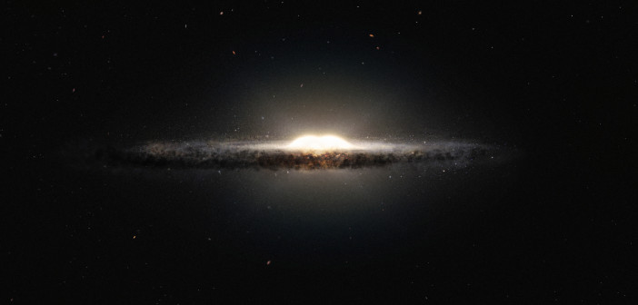
Galactic center
The Galactic center is in the southern hemisphere and, according to Kepler's laws, it has stars with the shortest period orbits! To see these stars in this densest region of the galaxy, full of astrophysical dust, we need IR (the dust absorbs short wavelength photons and re-emits at longer wavelengths).
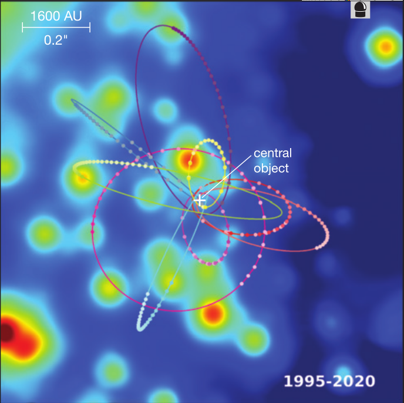
By tracing the orbits of the innermost stars of the Galaxy, the one with the shortest separation from the Galactic center, we can constrain the amount of mass at the center.
Not only it's more than we can see (like what causes the idea of DM), but also it has to be within these short orbits! So it has to be extremely dense: only a supermassive black hole (SMBH) can be there, with \(M\gtrsim 10^{6}\,M_{☉}\).
Large galaxies like the MW host SMBHs! How these form remains a mystery between cosmology and accretion physics (the study of how matters falls into BHs). Whether smaller galaxies like the LMC host an SMBH or not remains to be seen.
Event of Horizon Telescope
The EHT network has used radio-interferometry (i.e., reconstructing the shape of a source through timing of the arrival of radio photons at different locations) to image the center of the galaxy, so-called Sagittarius A*.
This "reconstructed" interferometric image shows a disk of gas slowly falling onto the SMBH and the "shadow" of the BH itself:

Note that despite its mass, the SMBH gravitationally influences only a very small sub-parsec region around it, and the orbits of stars that allowed its confirmation are still Keplerian according to Newtonian gravity!
Galactic dynamics
Dynamics within the galaxy
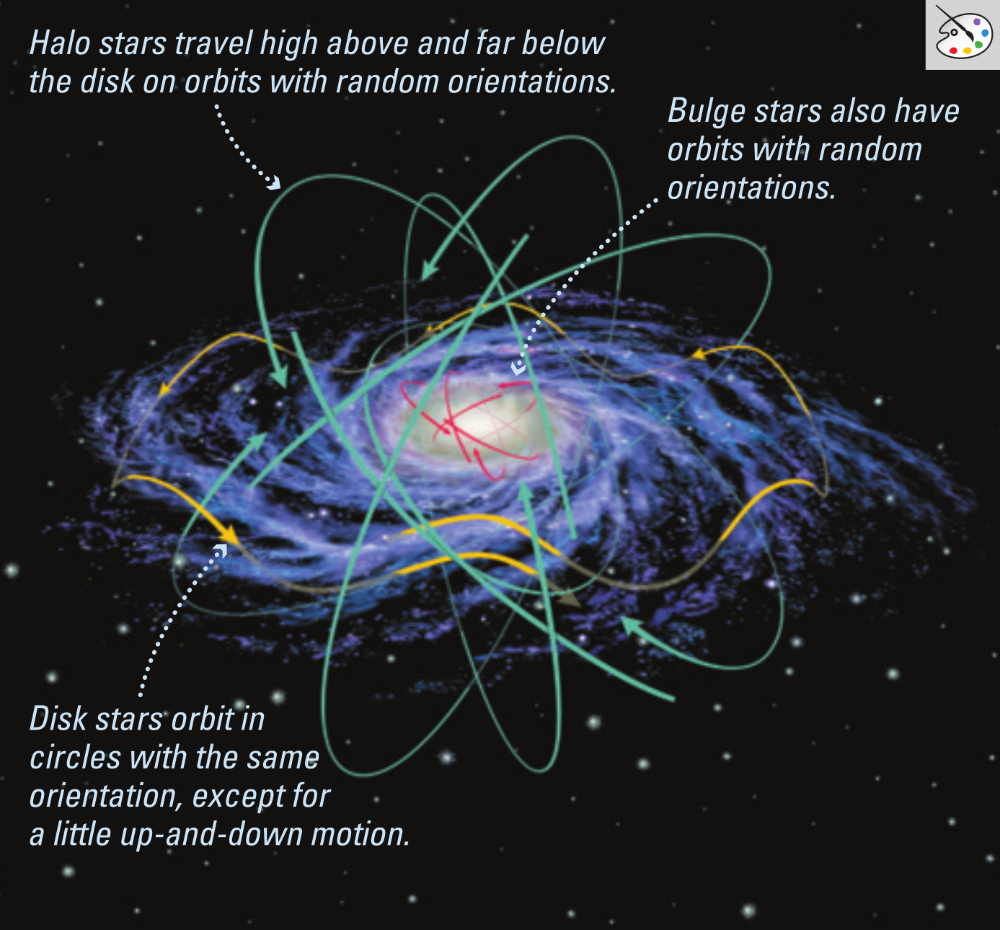
Stellar collisions: not really! The density of stars is too low, we can estimate it (in reality it's not uniform!):
ρ* ≅ {1012 \, \mathrm{stars}}{\mathrm{Vol}}=\frac{1012 \, \mathrm{stars}}{\frac{4}{3}π R3} ≅ 0.2 \mathrm{pc}-3 \ \ ,
assuming \(R=10\,\mathrm{kpc}\). Stars are almost never coming close enough to each other.
Also, recall that most of the mass appears to be roughly uniformly distributed DM which determines to zeroth order the potential of the galaxy.
As an example, the gif below from Dr. Tom Wagg shows a binary system moving through a galaxy under the influence of the total gravitational potential of the galaxy. When a SN occurs in the binary, the explosion breaks the binary and sends the two stars (one of which is now a NS) on separate paths:
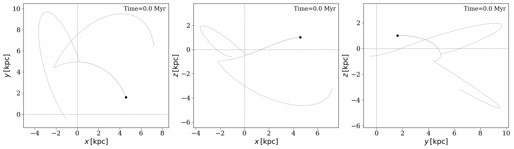
But, as we will see in a second, over billions of years, a galaxy is not isolated, fly-bys within the galaxy cluster, and mergers occur, bringing in new mass and perturbing the orbits of long-lived low mass-stars. The longer the life of a star, the more chances of something perturbing it onto a high-inclination high-eccentricity orbit spending a lot more time (because of the second Kepler law) in the halo!
N.B.: this is also a reason for old galaxies to be elliptical and puffy instead of "disky" and flat.
The collection of all the orbits of stars determines the evolving shape of a galaxy
Hypervelocity stars
If a binary system gets too close to the SMBH, one star can be "swallowed" (maybe in a tidal disruption event), and the other flung out with all the recoil (the mass of the star is very small compared to the SMBH), becoming an hypervelocity star and escaping the galaxy!
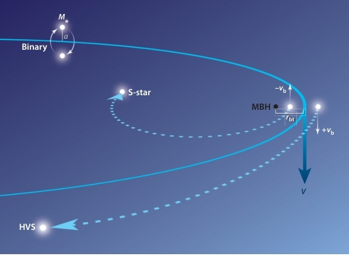
Dynamics among galaxies
The MW is a spiral galaxy, and the LMC and SMC are dwarf galaxies orbiting each other and the MW. About 150-200 million years ago, LMC and SMC collided.
Even when two galaxies merge, they basically go through each other with barely any stellar system touching, but galaxy mergers can compress interstellar diffuse gas driving the formation of new stars: often galaxy mergers host young stars and stellar explosions from massive stars.
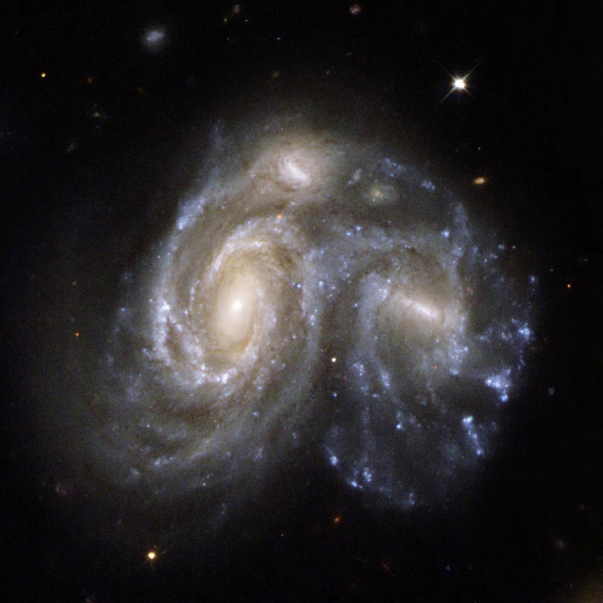
Galactic Evolution
Gas cycling: stars in the ISM and galaxies in the IGM
We have already seen that stars take the gas of the interstellar material and process it forming new elements, and return it at their deaths to the galaxy. This is a big part of the chemical evolution of a galaxy, and since stars keep forming from new gas, their chemical composition allows to constrain when they formed.
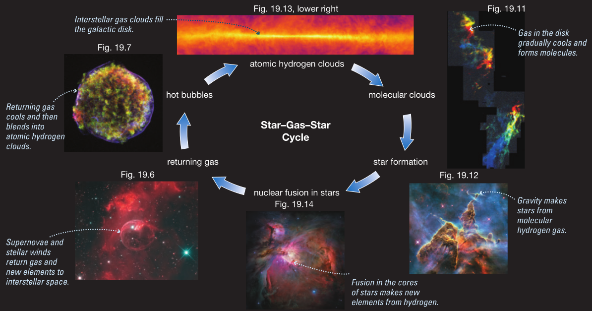
Galaxy themselves act as gas processor at kiloparsec scale, with the reservoir being not the ISM, but the IGM, inter-galactic medium.
Huge gas inflow made of cold hydrogen can fall into a galactic halo, refueling a galaxy. At the same time, energetic phenomena, for example SN explosions of the stars in the galaxy and outbursts from the SMBH can drive galactic outflows:
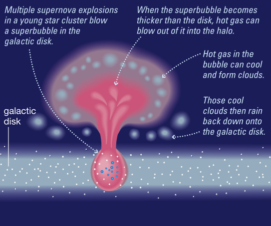
See also the bubbles of hot gas raising in the X-ray images of the MW:
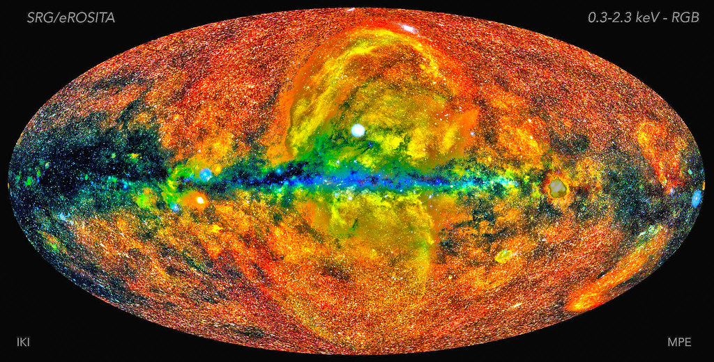
there is evidence for a past thick gaseous disk around the SMBH and possibly large bubbles blown above/below the equator (so-called Fermi bubbles).
Galaxy inside-out assembly
The dominant cosmological model to date, Λ CDM, which we will discuss later in the course, predicts the formation of DM halos along the cosmic web, which pull gravitationally baryonic gas in forming galaxies in cluster.
Within a cluster, galaxies are always out of dynamical equilibrium (unlike stars, which are hydrostatic for the most), and as they zoom past they can merge: bigger galaxies assemble inside out swallowing dwarf galaxies (the MW ultimately will the LMC and SMC), and merging with each other (much more rarely since big galaxies are rare!), like the MW and Andromeda/M31 will.
The video below shows the gas density of a numerical simulations of the evolution of a galaxy and its satellites over billions of years:
Stellar streams
The picture of inside-out galaxy formation and evolution is directly supported by stellar streams within the MW. These are groups of kinematically and chemically related stars (i.e., they are made of the same composition and move along orbits with similar properties) which trace the tidally disrupted dwarf galaxies and clusters that fell into the Galaxy and were "spaghettified" by the gravitational field of the galaxy. Finding these streams is often a task referred to as Galactic archaeology since they are "fossil remnants" of the galaxies eat by the MW.
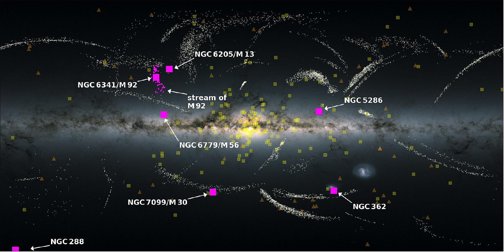
Gaia can do this by tracking position (through precision parallax) and velocity of each star, complemented by spectroscopy (on board or on the ground) to tag the composition. The video below is from the third Gaia public data release, and the 4th is expected in December 2026, providing for free access to unprecedented new data to anyone!